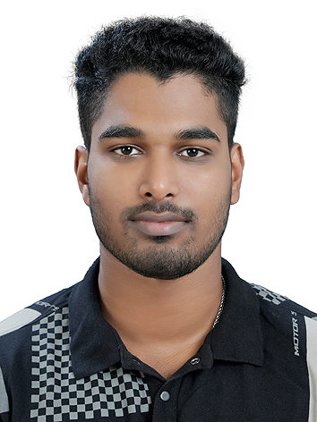

Hello! I’m Akhil Baiju, originally from Kerala, India. I completed my early education and earned a Bachelor's degree in Computer Application in Kerala. Following my graduation, I worked for over two years as an Oracle Database Administrator at Capgemini in Bangalore, where I gained hands-on experience in enterprise-level database systems and infrastructure.
Eager to expand my global exposure and deepen my understanding of modern software practices, I moved to Germany in the Winter Semester of 2024 to pursue a Master's degree in Global Software Development at Hochschule Fulda.
This "About Me" page is part of a collaborative academic project for the course Global Distributed Software Development, where I am responsible for managing and structuring the database architecture of our team’s application. I’m passionate about building reliable back-end systems and enjoy bridging the gap between data and meaningful software solutions.